CODING AGENTS AS PIXEL WORLD MODELS
traex/GPT-6.1-Sol · 0077
点击播放 · 原生 RGB 像素
逐轮保存的候选
回放视频、检查图与代码变化。
每份候选均可单独播放。实际图片检查记录在下方工具轨迹中。
候选 01播放与检查图
点击播放 · 原生 RGB 像素

展开代码变化
--- 上一保存版本
+++ 本次保存版本
@@ -0,0 +1,209 @@
+from pathlib import Path
+import numpy as np
+from PIL import Image, ImageDraw
+import cv2
+from scipy.ndimage import gaussian_filter, map_coordinates
+import artifact_io
+
+ROOT=Path(__file__).resolve().parent
+S=3
+W,H=256*S,144*S
+source=np.array(Image.open(ROOT/'first_frame.png').convert('RGB'))
+CX,CY=159.3,114.0
+E=.237; C=np.sqrt(1-E*E)
+ANGLE0=-.25
+
+# Round-section ceramic handle, in a radial plane of the cup.
+def handle_mesh(angle):
+ # Rounded rectangular loop with the inward side embedded in the cup.
+ ctrl=np.array([[14.1,25.2],[20.9,25.8],[23.8,25.6],[25.0,24.0],[25.1,20.0],[25.1,9.0],[24.8,5.8],[23.2,4.5],[20.1,5.5],[14.1,8.2]])
+ # Catmull-Rom interpolation; only the visible three sides are required.
+ pts=[]
+ q=np.concatenate([ctrl[:1],ctrl,ctrl[-1:]],axis=0)
+ for j in range(len(ctrl)-1):
+ p0,p1,p2,p3=q[j:j+4]
+ for t in np.linspace(0,1,7,endpoint=False):
+ pts.append(.5*((2*p1)+(-p0+p2)*t+(2*p0-5*p1+4*p2-p3)*t*t+(-p0+3*p1-3*p2+p3)*t**3))
+ pts.append(ctrl[-1]); pts=np.array(pts)
+ tangent=np.gradient(pts,axis=0); tangent/=np.linalg.norm(tangent,axis=1)[:,None]
+ radial=np.array([-np.cos(angle),np.sin(angle),0.])
+ sideways=np.array([np.sin(angle),np.cos(angle),0.])
+ vertices=[];normals=[]
+ N=20
+ for (r,z),(tr,tz) in zip(pts,tangent):
+ nplane=-tz*radial+np.array([0,0,tr])
+ for b in np.arange(N)*2*np.pi/N:
+ normal=np.cos(b)*nplane+np.sin(b)*sideways
+ vertices.append(r*radial+np.array([0,0,z])+1.62*normal)
+ normals.append(normal)
+ faces=[]
+ for i in range(len(pts)-1):
+ for b in range(N):
+ a=i*N+b; d=i*N+(b+1)%N; c=(i+1)*N+(b+1)%N; e=(i+1)*N+b
+ faces.extend([[a,e,c],[a,c,d]])
+ return np.array(vertices),np.array(normals),np.array(faces)
+
+
+def project(v,shadow=False):
+ if shadow:
+ m=86./(60+v[:,1])
+ return np.stack([161.5+v[:,0]*m,90.5-v[:,2]*m*1.06, -v[:,1]],axis=1)
+ return np.stack([CX+v[:,0],CY-C*v[:,2]-E*v[:,1],-C*v[:,1]+E*v[:,2]],axis=1)
+
+# Local triangle rasterizer. It interpolates surface normals and depths.
+def raster(p,faces,attrs=None,depth_init=None):
+ depth=np.full((H,W),-1e8,np.float32) if depth_init is None else depth_init.copy()
+ coverage=np.zeros((H,W),np.float32)
+ tex=np.zeros((H,W,attrs.shape[1]),np.float32) if attrs is not None else None
+ p=p.copy();p[:,:2]*=S
+ for f in faces:
+ a,b,c=p[f]
+ x0=max(0,int(np.floor(min(a[0],b[0],c[0]))));x1=min(W-1,int(np.ceil(max(a[0],b[0],c[0]))))
+ y0=max(0,int(np.floor(min(a[1],b[1],c[1]))));y1=min(H-1,int(np.ceil(max(a[1],b[1],c[1]))))
+ if x1<x0 or y1<y0: continue
+ det=(b[1]-c[1])*(a[0]-c[0])+(c[0]-b[0])*(a[1]-c[1])
+ if abs(det)<1e-6:continue
+ yy,xx=np.mgrid[y0:y1+1,x0:x1+1];xx=xx+.5;yy=yy+.5
+ u=((b[1]-c[1])*(xx-c[0])+(c[0]-b[0])*(yy-c[1]))/det
+ v=((c[1]-a[1])*(xx-c[0])+(a[0]-c[0])*(yy-c[1]))/det
+ w=1-u-v
+ d=u*a[2]+v*b[2]+w*c[2]
+ old=depth[y0:y1+1,x0:x1+1]
+ ok=(u>=-1e-5)&(v>=-1e-5)&(w>=-1e-5)&(d>old)
+ if not np.any(ok):continue
+ old[ok]=d[ok];coverage[y0:y1+1,x0:x1+1][ok]=1
+ if attrs is not None:
+ ta,tb,tc=attrs[f]
+ values=u[...,None]*ta+v[...,None]*tb+w[...,None]*tc
+ tex[y0:y1+1,x0:x1+1][ok]=values[ok]
+ return coverage,tex,depth
+
+
+def cup_depth():
+ vertices=[]
+ n=120
+ for z in [0,32.5]:
+ for th in np.arange(n)*2*np.pi/n:
+ vertices.append([15.65*np.cos(th),15.65*np.sin(th),z])
+ vertices.extend([[0,0,32.5],[0,0,0]])
+ faces=[]
+ for j in range(n):
+ k=(j+1)%n
+ faces.extend([[j,k,k+n],[j,k+n,j+n],[j+n,k+n,2*n],[j,2*n+1,k]])
+ _,_,d=raster(project(np.array(vertices)),np.array(faces))
+ return d
+
+
+def make_background():
+ # Restore only the small wall area formerly occluded by the handle.
+ yy,xx=np.mgrid[:144,:256]
+ smask=((xx>=119)&(xx<=141)&(yy>=43)&(yy<=84)&(source[:,:,0]<120)&(source[:,:,1]<120)).astype(np.uint8)
+ # Don't erase the stable shadow of the cylindrical cup.
+ border=np.array([np.interp(y,[43,45,48,54,65,75,80,84],[142,139,138,138,138,139,139,141]) for y in range(144)])
+ smask[xx>=border[:,None]]=0
+ smask=cv2.dilate(smask,np.ones((3,3),np.uint8))
+ smask[xx>=border[:,None]]=0
+ wall=cv2.inpaint(source,smask,5,cv2.INPAINT_TELEA)
+ # Smooth the restored wall without changing the rest of the image.
+ blurred=gaussian_filter(wall.astype(float),(.7,.7,0))
+ wall[smask.astype(bool)]=blurred[smask.astype(bool)]
+ # A precise mask for the original exposed ceramic handle.
+ mugmask=np.zeros((144,256),np.uint8)
+ polygon=[(145,88),(139,88),(134,90),(131,93),(131,108),(132,112),(136,114),(141,112),(145,109),(146,105),(146,89)]
+ cv2.fillPoly(mugmask,[np.array(polygon)],1)
+ # Only remove the outside of the unchanged cylinder.
+ mugmask[xx>=144]=0
+ clean=cv2.inpaint(wall,mugmask,4,cv2.INPAINT_TELEA)
+ # Remove the last lateral dark join at the left edge of the cylinder.
+ for y in range(88,109):
+ clean[y,144]=.75*clean[y,145]+.25*clean[y,144]
+ return clean,smask,mugmask
+
+BG,SHADOW_REMOVAL,HANDLE_REMOVAL=make_background()
+BODY_DEPTH=cup_depth()
+
+# Keep the actual cylinder shadow as a foreground occluder for shadow rays.
+YY,XX=np.mgrid[:144,:256]
+# Wall illumination compared to dark cylinder: high fidelity mask follows source.
+cylregion=(XX>=138)&(XX<=184)&(YY>=36)&(YY<=91)
+cylalpha=np.clip((120-source[:,:,0].astype(float))/72,0,1)*cylregion
+# At the left flank, the large source handle is not part of the cylinder.
+for y in range(144):
+ left=np.interp(y,[36,40,43,48,75,82,87,90],[158,146,140,139,140,142,144,167])
+ cylalpha[y,XX[y]<left]=0
+cylalpha=gaussian_filter(cylalpha,.35)
+
+V0,N0,F=handle_mesh(ANGLE0)
+P0=project(V0)
+# Retain the photographic glaze texture where the initial surface was visible.
+SAMPLES=np.stack([map_coordinates(source[:,:,k].astype(float),[P0[:,1]-.5,P0[:,0]-.5],order=1,mode='nearest') for k in range(3)],axis=1)
+visible0=(N0 @ np.array([0,-C,E]))>.05
+valid_texture=visible0&(SAMPLES[:,0]>90)&(SAMPLES[:,1]>65)&(SAMPLES[:,2]<90)&(P0[:,0]<144)
+
+
+def lighting(v,n):
+ n=n/(np.linalg.norm(n,axis=-1,keepdims=True)+1e-9)
+ l=np.array([-0.23,-.97,-.05]);l/=np.linalg.norm(l)
+ view=np.array([0,-C,E]);half=(l+view);half/=np.linalg.norm(half)
+ diffuse=np.clip(n@l,0,1)
+ spec=np.clip(n@half,0,1)**40
+ t=np.clip((v[...,2]-4)/24,0,1)
+ exposure=1.19-.23*t
+ bright=(.40+.66*diffuse)*exposure
+ rgb=bright[...,None]*np.array([237,187,2.5])+spec[...,None]*np.array([115,150,110])
+ # Slight warm bounced light from the illuminated yellow cup.
+ rgb[...,1]+=6
+ return np.clip(rgb,0,255)
+REF_LIGHT=lighting(V0,N0)
+
+
+def render(angle,frame_index):
+ v,n,f=handle_mesh(angle)
+ p=project(v)
+ basecols=lighting(v,n)
+ # Ceramic's captured small surface variation fades as it turns from view.
+ weight=max(0,1-abs(angle-ANGLE0)/1.15)
+ textured=np.clip(SAMPLES* (basecols+14)/(REF_LIGHT+14),0,255)
+ cols=basecols.copy()
+ cols[valid_texture]=weight*textured[valid_texture]+(1-weight)*cols[valid_texture]
+ cov,attrs,_=raster(p,f,np.concatenate([cols,n,v],axis=1),BODY_DEPTH)
+ # Interpolated normals avoid a faceted ceramic appearance.
+ proper=lighting(attrs[...,6:9],attrs[...,3:6])
+ interp=attrs[:,:,:3]
+ final_col=(proper*.28+interp*.72)
+ # Shadows use the same geometry, projected from the fixed low spotlight.
+ shcov,_,_=raster(project(v,True),f)
+ shcov=cv2.resize(shcov,(256,144),interpolation=cv2.INTER_AREA)
+ shcov=gaussian_filter(shcov,.55)
+ shcov*=1-cylalpha
+ shadowcolor=np.empty_like(BG,dtype=float)
+ shadowcolor[:]=[55,52,43]
+ # Reflected fill illumination makes the lower shadow softly olive-gray.
+ shadowcolor+=(np.clip(YY-55,0,30)/30)[...,None]*np.array([11,13,8])
+ shcov[YY>=91]=0
+ out=BG.astype(float)*(1-shcov[:,:,None])+shadowcolor*shcov[:,:,None]
+ # Preserve the unchanged cylinder and projected cylinder shadow exactly.
+ out=out*(1-cylalpha[:,:,None])+source*cylalpha[:,:,None]
+ alpha=cv2.resize(cov,(256,144),interpolation=cv2.INTER_AREA)
+ rgb=cv2.resize(final_col*cov[:,:,None],(256,144),interpolation=cv2.INTER_AREA)
+ rgb/=np.maximum(alpha[:,:,None],1e-6)
+ # Subpixel edge softness matches the optical focus of the source footage.
+ alpha=gaussian_filter(alpha,.34)
+ premult=gaussian_filter(rgb*cv2.resize(cov,(256,144),interpolation=cv2.INTER_AREA)[:,:,None],(.34,.34,0))
+ rgb=premult/np.maximum(alpha[:,:,None],1e-6)
+ out=out*(1-alpha[:,:,None])+rgb*alpha[:,:,None]
+ return np.uint8(np.clip(np.round(out),0,255))
+
+
+def main():
+ (ROOT/'.tmp').mkdir(exist_ok=True)
+ Image.fromarray(BG).save(ROOT/'.tmp/background.png')
+ frames=[source.copy()]
+ for i in range(1,20):
+ theta=ANGLE0+(2*np.pi/6.5)*(i/4)
+ frames.append(render(theta,i))
+ frames=np.array(frames,dtype=np.uint8)
+ artifact_io.save(frames,ROOT)
+ Image.fromarray(render(ANGLE0,0)).save(ROOT/'.tmp/model_initial.png')
+
+if __name__=='__main__':main()
候选 02播放与检查图
点击播放 · 原生 RGB 像素
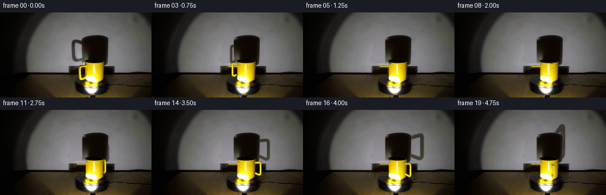
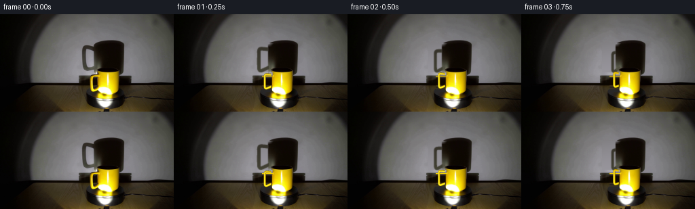
展开代码变化
--- 上一保存版本
+++ 本次保存版本
@@ -95,41 +95,60 @@
def make_background():
- # Restore only the small wall area formerly occluded by the handle.
yy,xx=np.mgrid[:144,:256]
- smask=((xx>=119)&(xx<=141)&(yy>=43)&(yy<=84)&(source[:,:,0]<120)&(source[:,:,1]<120)).astype(np.uint8)
- # Don't erase the stable shadow of the cylindrical cup.
- border=np.array([np.interp(y,[43,45,48,54,65,75,80,84],[142,139,138,138,138,139,139,141]) for y in range(144)])
- smask[xx>=border[:,None]]=0
- smask=cv2.dilate(smask,np.ones((3,3),np.uint8))
- smask[xx>=border[:,None]]=0
- wall=cv2.inpaint(source,smask,5,cv2.INPAINT_TELEA)
- # Smooth the restored wall without changing the rest of the image.
- blurred=gaussian_filter(wall.astype(float),(.7,.7,0))
- wall[smask.astype(bool)]=blurred[smask.astype(bool)]
- # A precise mask for the original exposed ceramic handle.
- mugmask=np.zeros((144,256),np.uint8)
- polygon=[(145,88),(139,88),(134,90),(131,93),(131,108),(132,112),(136,114),(141,112),(145,109),(146,105),(146,89)]
- cv2.fillPoly(mugmask,[np.array(polygon)],1)
- # Only remove the outside of the unchanged cylinder.
- mugmask[xx>=144]=0
- clean=cv2.inpaint(wall,mugmask,4,cv2.INPAINT_TELEA)
- # Remove the last lateral dark join at the left edge of the cylinder.
- for y in range(88,109):
- clean[y,144]=.75*clean[y,145]+.25*clean[y,144]
- return clean,smask,mugmask
+ # Fit the unobstructed illuminated plaster to a low-order local surface.
+ select=(xx>=107)&(xx<=196)&(yy>=32)&(yy<=89)&(((xx<=119))|((xx>=126)&(xx<=134)&(yy>=54)&(yy<=76))|((xx>=186))|((yy<=36)))
+ a=(xx-148)/45.; b=(yy-62)/32.
+ design=np.stack([a*0+1,a,b,a*a,a*b,b*b,a*a*b,a*b*b,b**3],axis=-1)
+ coef=np.linalg.lstsq(design[select],source[select].astype(float),rcond=None)[0]
+ plaster=design@coef
+ fine=source.astype(float)-gaussian_filter(source.astype(float),(1.5,1.5,0))
+ # Restore the clean cylindrical edge where the handle met its shadow.
+ start=np.interp(np.arange(144),[32,38,40,42,44,46,50,60,72,78,81,84,87,89],[170,157,146,141,139,138,138,138,138,138,139,140,142,146])
+ stop=start+7
+ feather=np.clip((xx-start[:,None])/7,0,1)
+ restore=(xx>=119)&(xx<=stop[:,None])&(yy>=43)&(yy<=85)
+ wall=source.astype(float).copy()
+ # The left cylinder flank has a smooth, much softer shadow than the handle.
+ edge_alpha=gaussian_filter((xx>=139).astype(float),(.0,.68))
+ edge_alpha*=np.clip((yy-43)/5,0,1)*np.clip((86-yy)/4,0,1)
+ fill=plaster.copy()
+ for y in range(43,86):
+ dark=source[y,145].astype(float)
+ if y>=79: dark=source[min(y,78),145].astype(float)
+ opacity=edge_alpha[y]
+ fill[y]=plaster[y]*(1-opacity[:,None])+dark*opacity[:,None]
+ blend=restore*(1-feather)
+ wall=wall*(1-blend[:,:,None])+fill*blend[:,:,None]
+ # Restore the tabletop, platform and wall behind the former mug handle
+ # by continuing adjacent clean horizontal lighting bands.
+ mask=np.zeros((144,256),float)
+ for y in range(86,115):
+ xleft=130 if y>=90 else 136
+ if y==86:xleft=140
+ xright=145 if y<=92 else 144
+ for x in range(xleft,xright+1):
+ strength=np.clip((xright+1-x)/1.5,0,1)
+ if y<=90:
+ color=np.mean(wall[y,127:132],axis=0)
+ elif y<109:
+ color=np.mean(source[y,139:142],axis=0).astype(float)
+ else:
+ color=np.mean(source[y,128:132],axis=0).astype(float)
+ wall[y,x]=wall[y,x]*(1-strength)+color*strength
+ mask[y,x]=strength
+ return np.uint8(np.clip(wall,0,255)),restore.astype(np.uint8),mask
BG,SHADOW_REMOVAL,HANDLE_REMOVAL=make_background()
BODY_DEPTH=cup_depth()
# Keep the actual cylinder shadow as a foreground occluder for shadow rays.
YY,XX=np.mgrid[:144,:256]
-# Wall illumination compared to dark cylinder: high fidelity mask follows source.
-cylregion=(XX>=138)&(XX<=184)&(YY>=36)&(YY<=91)
-cylalpha=np.clip((120-source[:,:,0].astype(float))/72,0,1)*cylregion
-# At the left flank, the large source handle is not part of the cylinder.
+# Cylindrical shadow occlusion follows the restored source silhouette.
+cylregion=(XX>=139)&(XX<=184)&(YY>=36)&(YY<=91)
+cylalpha=np.clip((120-BG[:,:,0].astype(float))/72,0,1)*cylregion
for y in range(144):
- left=np.interp(y,[36,40,43,48,75,82,87,90],[158,146,140,139,140,142,144,167])
+ left=np.interp(y,[36,40,43,48,75,82,87,90],[158,146,140,139,139,140,142,167])
cylalpha[y,XX[y]<left]=0
cylalpha=gaussian_filter(cylalpha,.35)
@@ -162,7 +181,7 @@
p=project(v)
basecols=lighting(v,n)
# Ceramic's captured small surface variation fades as it turns from view.
- weight=max(0,1-abs(angle-ANGLE0)/1.15)
+ weight=0.0
textured=np.clip(SAMPLES* (basecols+14)/(REF_LIGHT+14),0,255)
cols=basecols.copy()
cols[valid_texture]=weight*textured[valid_texture]+(1-weight)*cols[valid_texture]
@@ -183,7 +202,7 @@
shcov[YY>=91]=0
out=BG.astype(float)*(1-shcov[:,:,None])+shadowcolor*shcov[:,:,None]
# Preserve the unchanged cylinder and projected cylinder shadow exactly.
- out=out*(1-cylalpha[:,:,None])+source*cylalpha[:,:,None]
+ out=out*(1-cylalpha[:,:,None])+BG*cylalpha[:,:,None]
alpha=cv2.resize(cov,(256,144),interpolation=cv2.INTER_AREA)
rgb=cv2.resize(final_col*cov[:,:,None],(256,144),interpolation=cv2.INTER_AREA)
rgb/=np.maximum(alpha[:,:,None],1e-6)
候选 03播放与检查图
点击播放 · 原生 RGB 像素
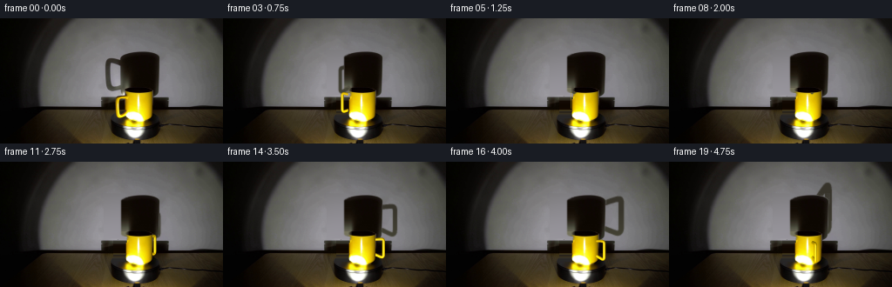
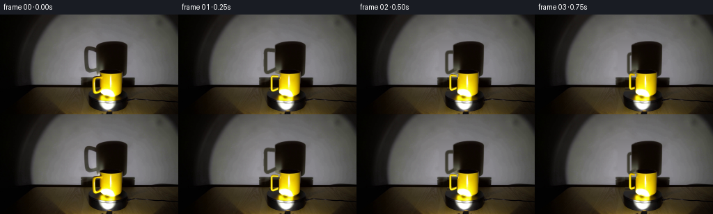
展开代码变化
--- 上一保存版本
+++ 本次保存版本
@@ -103,23 +103,21 @@
coef=np.linalg.lstsq(design[select],source[select].astype(float),rcond=None)[0]
plaster=design@coef
fine=source.astype(float)-gaussian_filter(source.astype(float),(1.5,1.5,0))
- # Restore the clean cylindrical edge where the handle met its shadow.
- start=np.interp(np.arange(144),[32,38,40,42,44,46,50,60,72,78,81,84,87,89],[170,157,146,141,139,138,138,138,138,138,139,140,142,146])
- stop=start+7
- feather=np.clip((xx-start[:,None])/7,0,1)
- restore=(xx>=119)&(xx<=stop[:,None])&(yy>=43)&(yy<=85)
- wall=source.astype(float).copy()
- # The left cylinder flank has a smooth, much softer shadow than the handle.
- edge_alpha=gaussian_filter((xx>=139).astype(float),(.0,.68))
- edge_alpha*=np.clip((yy-43)/5,0,1)*np.clip((86-yy)/4,0,1)
+ # Reconstruct the small, formerly occluded part of the cylinder silhouette.
+ nx=(xx-160.5)/22.4
+ root=np.sqrt(np.maximum(0,1-nx*nx))
+ silhouette=(abs(nx)<1)&(yy>=45.3-6.65*root)&(yy<=81.1+7.6*root)
+ occlusion=gaussian_filter(silhouette.astype(float),.7)
fill=plaster.copy()
- for y in range(43,86):
- dark=source[y,145].astype(float)
- if y>=79: dark=source[min(y,78),145].astype(float)
- opacity=edge_alpha[y]
+ for y in range(36,90):
+ dark=source[min(max(y,43),78),146].astype(float)
+ if y>=80:dark+=np.array([20,20,13])
+ opacity=occlusion[y]
fill[y]=plaster[y]*(1-opacity[:,None])+dark*opacity[:,None]
- blend=restore*(1-feather)
- wall=wall*(1-blend[:,:,None])+fill*blend[:,:,None]
+ restore=(xx>=119)&(xx<=147)&(yy>=36)&(yy<=89)
+ blend=restore*np.clip((148-xx)/5,0,1)
+ blend*=np.clip((yy-35)/2,0,1)*np.clip((91-yy)/4,0,1)
+ wall=source.astype(float)*(1-blend[:,:,None])+fill*blend[:,:,None]
# Restore the tabletop, platform and wall behind the former mug handle
# by continuing adjacent clean horizontal lighting bands.
mask=np.zeros((144,256),float)
@@ -129,8 +127,8 @@
xright=145 if y<=92 else 144
for x in range(xleft,xright+1):
strength=np.clip((xright+1-x)/1.5,0,1)
- if y<=90:
- color=np.mean(wall[y,127:132],axis=0)
+ if y<=93:
+ color=np.mean(wall[y,123:128],axis=0)
elif y<109:
color=np.mean(source[y,139:142],axis=0).astype(float)
else:
候选 04播放与检查图
点击播放 · 原生 RGB 像素
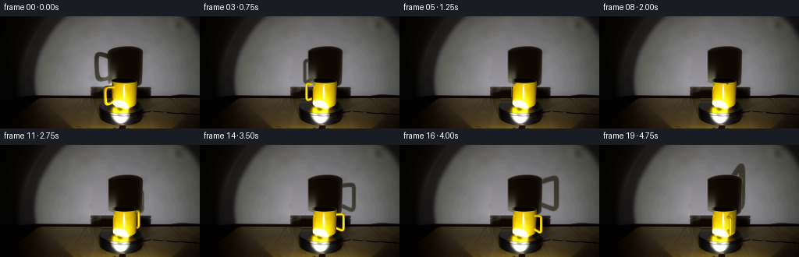
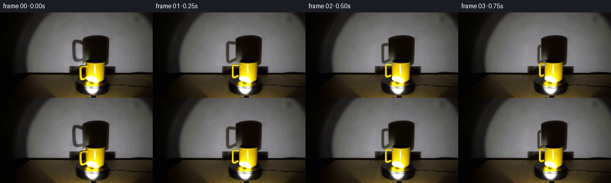
展开代码变化
--- 上一保存版本
+++ 本次保存版本
@@ -133,6 +133,8 @@
color=np.mean(source[y,139:142],axis=0).astype(float)
else:
color=np.mean(source[y,128:132],axis=0).astype(float)
+ # Fine local grain survives without sharp patch-boundary stripes.
+ color=color+fine[y,126+(x%4)]*.3
wall[y,x]=wall[y,x]*(1-strength)+color*strength
mask[y,x]=strength
return np.uint8(np.clip(wall,0,255)),restore.astype(np.uint8),mask
@@ -184,6 +186,21 @@
cols=basecols.copy()
cols[valid_texture]=weight*textured[valid_texture]+(1-weight)*cols[valid_texture]
cov,attrs,_=raster(p,f,np.concatenate([cols,n,v],axis=1),BODY_DEPTH)
+ # When the handle faces the lamp, it casts a small soft secondary
+ # shadow onto the front of the ceramic cylinder.
+ lamp=np.array([-3.,-60.,0.])
+ ray=v-lamp
+ aa=ray[:,0]**2+ray[:,1]**2
+ bb=2*(v[:,0]*ray[:,0]+v[:,1]*ray[:,1])
+ cc=v[:,0]**2+v[:,1]**2-15.65**2
+ disc=bb*bb-4*aa*cc
+ t=(-bb-np.sqrt(np.maximum(disc,0)))/(2*aa)
+ hit=v+t[:,None]*ray
+ valid=(disc>0)&(t>0)&(hit[:,2]>0)&(hit[:,2]<32.5)
+ hitfaces=f[np.all(valid[f],axis=1)]
+ selfshadow,_,_=raster(project(hit),hitfaces)
+ bodymask=BODY_DEPTH>-1e6
+ selfshadow=gaussian_filter(selfshadow,.65*S)*bodymask
# Interpolated normals avoid a faceted ceramic appearance.
proper=lighting(attrs[...,6:9],attrs[...,3:6])
interp=attrs[:,:,:3]
@@ -199,6 +216,8 @@
shadowcolor+=(np.clip(YY-55,0,30)/30)[...,None]*np.array([11,13,8])
shcov[YY>=91]=0
out=BG.astype(float)*(1-shcov[:,:,None])+shadowcolor*shcov[:,:,None]
+ bodysh=cv2.resize(selfshadow,(256,144),interpolation=cv2.INTER_AREA)
+ out*=1-.22*bodysh[:,:,None]
# Preserve the unchanged cylinder and projected cylinder shadow exactly.
out=out*(1-cylalpha[:,:,None])+BG*cylalpha[:,:,None]
alpha=cv2.resize(cov,(256,144),interpolation=cv2.INTER_AREA)
可观测工具轨迹
实际执行的命令与返回图片。
命令 1exit 0
/bin/bash -lc "ls -la && cat prompt.txt && printf '\\n---RULES---\\n' && cat GENERATION_RULES.md"
命令 2exit 0
/bin/bash -lc "cat artifact_io.py && python - <<'PY'
from PIL import Image
im=Image.open('first_frame.png');im.resize((1024,576)).save('.tmp/up.png')
PY"命令 3exit 0
/bin/bash -lc "python - <<'PY'
from PIL import Image
im=Image.open('first_frame.png');im.crop((115,30,195,139)).resize((480,654)).save('.tmp/crop.png')
import importlib.util
for m in ['numpy','PIL','scipy','cv2']:
print(m, bool(importlib.util.find_spec(m)))
PY"命令 4exit 0
/bin/bash -lc "python - <<'PY'
from PIL import Image,ImageDraw
im=Image.open('first_frame.png').resize((1024,576))
d=ImageDraw.Draw(im)
for x in range(110,196,5):
d.line((x*4,25*4,x*4,140*4),fill=(255,80,80),width=1);d.text((x*4,100),str(x),fill=(255,90,90))
for y in range(30,141,5):
d.line((110*4,y*4,195*4,y*4),fill=(255,80,80),width=1); d.text((440,y*4),str(y),fill=(255,90,90))
im.save('.tmp/grid.png')
PY"命令 5exit 0
/bin/bash -lc "python - <<'PY'
import numpy as np
from PIL import Image
im=np.array(Image.open('first_frame.png'))
for y in [38,40,42,46,50,55,70,80,83,87,90,93,97,101,105,110,115]:
print(y,[(x,tuple(im[y,x])) for x in [120,125,130,133,136,138,140,143,146,150,155,160,170,175,180,183,187]])
PY"命令 6exit 0
/bin/bash -lc "cat > generate.py <<'PY'
from pathlib import Path
import numpy as np
from PIL import Image, ImageDraw
import cv2
from scipy.ndimage import gaussian_filter, map_coordinates
import artifact_io
ROOT=Path(__file__).resolve().parent
S=3
W,H=256*S,144*S
source=np.array(Image.open(ROOT/'first_frame.png').convert('RGB'))
CX,CY=159.3,114.0
E=.237; C=np.sqrt(1-E*E)
ANGLE0=-.25
# Round-section ceramic handle, in a radial plane of the cup.
def handle_mesh(angle):
# Rounded rectangular loop with the inward side embedded in the cup.
ctrl=np.array([[14.1,25.2],[20.9,25.8],[23.8,25.6],[25.0,24.0],[25.1,20.0],[25.1,9.0],[24.8,5.8],[23.2,4.5],[20.1,5.5],[14.1,8.2]])
# Catmull-Rom interpolation; only the visible three sides are required.
pts=[]
q=np.concatenate([ctrl[:1],ctrl,ctrl[-1:]],axis=0)
for j in range(len(ctrl)-1):
p0,p1,p2,p3=q[j:j+4]
for t in np.linspace(0,1,7,endpoint=False):
pts.append(.5*((2*p1)+(-p0+p2)*t+(2*p0-5*p1+4*p2-p3)*t*t+(-p0+3*p1-3*p2+p3)*t**3))
pts.append(ctrl[-1]); pts=np.array(pts)
tangent=np.gradient(pts,axis=0); tangent/=np.linalg.norm(tangent,axis=1)[:,None]
radial=np.array([-np.cos(angle),np.sin(angle),0.])
sideways=np.array([np.sin(angle),np.cos(angle),0.])
vertices=[];normals=[]
N=20
for (r,z),(tr,tz) in zip(pts,tangent):
nplane=-tz*radial+np.array([0,0,tr])
for b in np.arange(N)*2*np.pi/N:
normal=np.cos(b)*nplane+np.sin(b)*sideways
vertices.append(r*radial+np.array([0,0,z])+1.62*normal)
normals.append(normal)
faces=[]
for i in range(len(pts)-1):
for b in range(N):
a=i*N+b; d=i*N+(b+1)%N; c=(i+1)*N+(b+1)%N; e=(i+1)*N+b
faces.extend([[a,e,c],[a,c,d]])
return np.array(vertices),np.array(normals),np.array(faces)
def project(v,shadow=False):
if shadow:
m=86./(60+v[:,1])
return np.stack([161.5+v[:,0]*m,90.5-v[:,2]*m*1.06, -v[:,1]],axis=1)
return np.stack([CX+v[:,0],CY-C*v[:,2]-E*v[:,1],-C*v[:,1]+E*v[:,2]],axis=1)
# Local triangle rasterizer. It interpolates surface normals and depths.
def raster(p,faces,attrs=None,depth_init=None):
depth=np.full((H,W),-1e8,np.float32) if depth_init is None else depth_init.copy()
coverage=np.zeros((H,W),np.float32)
tex=np.zeros((H,W,attrs.shape[1]),np.float32) if attrs is not None else None
p=p.copy();p[:,:2]*=S
for f in faces:
a,b,c=p[f]
x0=max(0,int(np.floor(min(a[0],b[0],c[0]))));x1=min(W-1,int(np.ceil(max(a[0],b[0],c[0]))))
y0=max(0,int(np.floor(min(a[1],b[1],c[1]))));y1=min(H-1,int(np.ceil(max(a[1],b[1],c[1]))))
if x1<x0 or y1<y0: continue
det=(b[1]-c[1])*(a[0]-c[0])+(c[0]-b[0])*(a[1]-c[1])
if abs(det)<1e-6:continue
yy,xx=np.mgrid[y0:y1+1,x0:x1+1];xx=xx+.5;yy=yy+.5
u=((b[1]-c[1])*(xx-c[0])+(c[0]-b[0])*(yy-c[1]))/det
v=((c[1]-a[1])*(xx-c[0])+(a[0]-c[0])*(yy-c[1]))/det
w=1-u-v
d=u*a[2]+v*b[2]+w*c[2]
old=depth[y0:y1+1,x0:x1+1]
ok=(u>=-1e-5)&(v>=-1e-5)&(w>=-1e-5)&(d>old)
if not np.any(ok):continue
old[ok]=d[ok];coverage[y0:y1+1,x0:x1+1][ok]=1
if attrs is not None:
ta,tb,tc=attrs[f]
values=u[...,None]*ta+v[...,None]*tb+w[...,None]*tc
tex[y0:y1+1,x0:x1+1][ok]=values[ok]
return coverage,tex,depth
def cup_depth():
vertices=[]
n=120
for z in [0,32.5]:
for th in np.arange(n)*2*np.pi/n:
vertices.append([15.65*np.cos(th),15.65*np.sin(th),z])
vertices.extend([[0,0,32.5],[0,0,0]])
faces=[]
for j in range(n):
k=(j+1)%n
faces.extend([[j,k,k+n],[j,k+n,j+n],[j+n,k+n,2*n],[j,2*n+1,k]])
_,_,d=raster(project(np.array(vertices)),np.array(faces))
return d
def make_background():
# Restore only the small wall area formerly occluded by the handle.
yy,xx=np.mgrid[:144,:256]
smask=((xx>=119)&(xx<=141)&(yy>=43)&(yy<=84)&(source[:,:,0]<120)&(source[:,:,1]<120)).astype(np.uint8)
# Don't erase the stable shadow of the cylindrical cup.
border=np.array([np.interp(y,[43,45,48,54,65,75,80,84],[142,139,138,138,138,139,139,141]) for y in range(144)])
smask[xx>=border[:,None]]=0
smask=cv2.dilate(smask,np.ones((3,3),np.uint8))
smask[xx>=border[:,None]]=0
wall=cv2.inpaint(source,smask,5,cv2.INPAINT_TELEA)
# Smooth the restored wall without changing the rest of the image.
blurred=gaussian_filter(wall.astype(float),(.7,.7,0))
wall[smask.astype(bool)]=blurred[smask.astype(bool)]
# A precise mask for the original exposed ceramic handle.
mugmask=np.zeros((144,256),np.uint8)
polygon=[(145,88),(139,88),(134,90),(131,93),(131,108),(132,112),(136,114),(141,112),(145,109),(146,105),(146,89)]
cv2.fillPoly(mugmask,[np.array(polygon)],1)
# Only remove the outside of the unchanged cylinder.
mugmask[xx>=144]=0
clean=cv2.inpaint(wall,mugmask,4,cv2.INPAINT_TELEA)
# Remove the last lateral dark join at the left edge of the cylinder.
for y in range(88,109):
clean[y,144]=.75*clean[y,145]+.25*clean[y,144]
return clean,smask,mugmask
BG,SHADOW_REMOVAL,HANDLE_REMOVAL=make_background()
BODY_DEPTH=cup_depth()
# Keep the actual cylinder shadow as a foreground occluder for shadow rays.
YY,XX=np.mgrid[:144,:256]
# Wall illumination compared to dark cylinder: high fidelity mask follows source.
cylregion=(XX>=138)&(XX<=184)&(YY>=36)&(YY<=91)
cylalpha=np.clip((120-source[:,:,0].astype(float))/72,0,1)*cylregion
# At the left flank, the large source handle is not part of the cylinder.
for y in range(144):
left=np.interp(y,[36,40,43,48,75,82,87,90],[158,146,140,139,140,142,144,167])
cylalpha[y,XX[y]<left]=0
cylalpha=gaussian_filter(cylalpha,.35)
V0,N0,F=handle_mesh(ANGLE0)
P0=project(V0)
# Retain the photographic glaze texture where the initial surface was visible.
SAMPLES=np.stack([map_coordinates(source[:,:,k].astype(float),[P0[:,1]-.5,P0[:,0]-.5],order=1,mode='nearest') for k in range(3)],axis=1)
visible0=(N0 @ np.array([0,-C,E]))>.05
valid_texture=visible0&(SAMPLES[:,0]>90)&(SAMPLES[:,1]>65)&(SAMPLES[:,2]<90)&(P0[:,0]<144)
def lighting(v,n):
n=n/(np.linalg.norm(n,axis=-1,keepdims=True)+1e-9)
l=np.array([-0.23,-.97,-.05]);l/=np.linalg.norm(l)
view=np.array([0,-C,E]);half=(l+view);half/=np.linalg.norm(half)
diffuse=np.clip(n@l,0,1)
spec=np.clip(n@half,0,1)**40
t=np.clip((v[...,2]-4)/24,0,1)
exposure=1.19-.23*t
bright=(.40+.66*diffuse)*exposure
rgb=bright[...,None]*np.array([237,187,2.5])+spec[...,None]*np.array([115,150,110])
# Slight warm bounced light from the illuminated yellow cup.
rgb[...,1]+=6
return np.clip(rgb,0,255)
REF_LIGHT=lighting(V0,N0)
def render(angle,frame_index):
v,n,f=handle_mesh(angle)
p=project(v)
basecols=lighting(v,n)
# Ceramic's captured small surface variation fades as it turns from view.
weight=max(0,1-abs(angle-ANGLE0)/1.15)
textured=np.clip(SAMPLES* (basecols+14)/(REF_LIGHT+14),0,255)
cols=basecols.copy()
cols[valid_texture]=weight*textured[valid_texture]+(1-weight)*cols[valid_texture]
cov,attrs,_=raster(p,f,np.concatenate([cols,n,v],axis=1),BODY_DEPTH)
# Interpolated normals avoid a faceted ceramic appearance.
proper=lighting(attrs[...,6:9],attrs[...,3:6])
interp=attrs[:,:,:3]
final_col=(proper*.28+interp*.72)
# Shadows use the same geometry, projected from the fixed low spotlight.
shcov,_,_=raster(project(v,True),f)
shcov=cv2.resize(shcov,(256,144),interpolation=cv2.INTER_AREA)
shcov=gaussian_filter(shcov,.55)
shcov*=1-cylalpha
shadowcolor=np.empty_like(BG,dtype=float)
shadowcolor[:]=[55,52,43]
# Reflected fill illumination makes the lower shadow softly olive-gray.
shadowcolor+=(np.clip(YY-55,0,30)/30)[...,None]*np.array([11,13,8])
shcov[YY>=91]=0
out=BG.astype(float)*(1-shcov[:,:,None])+shadowcolor*shcov[:,:,None]
# Preserve the unchanged cylinder and projected cylinder shadow exactly.
out=out*(1-cylalpha[:,:,None])+source*cylalpha[:,:,None]
alpha=cv2.resize(cov,(256,144),interpolation=cv2.INTER_AREA)
rgb=cv2.resize(final_col*cov[:,:,None],(256,144),interpolation=cv2.INTER_AREA)
rgb/=np.maximum(alpha[:,:,None],1e-6)
# Subpixel edge softness matches the optical focus of the source footage.
alpha=gaussian_filter(alpha,.34)
premult=gaussian_filter(rgb*cv2.resize(cov,(256,144),interpolation=cv2.INTER_AREA)[:,:,None],(.34,.34,0))
rgb=premult/np.maximum(alpha[:,:,None],1e-6)
out=out*(1-alpha[:,:,None])+rgb*alpha[:,:,None]
return np.uint8(np.clip(np.round(out),0,255))
def main():
(ROOT/'.tmp').mkdir(exist_ok=True)
Image.fromarray(BG).save(ROOT/'.tmp/background.png')
frames=[source.copy()]
for i in range(1,20):
theta=ANGLE0+(2*np.pi/6.5)*(i/4)
frames.append(render(theta,i))
frames=np.array(frames,dtype=np.uint8)
artifact_io.save(frames,ROOT)
Image.fromarray(render(ANGLE0,0)).save(ROOT/'.tmp/model_initial.png')
if __name__=='__main__':main()
PY
OPENBLAS_NUM_THREADS=1 python generate.py"命令 7exit 0
/bin/bash -lc "python - <<'PY'
from PIL import Image
for name in ['background','model_initial']:
Image.open('.tmp/'+name+'.png').resize((1024,576)).save('.tmp/'+name+'_up.png')
Image.open('frames/14.png').resize((1024,576)).save('.tmp/14up.png')
PY"命令 8exit 0
/bin/bash -lc "python - <<'PY'
import numpy as np
from PIL import Image
im=np.array(Image.open('first_frame.png'))
for y in [45,50,55,60,65,70,75,80,85,90,95,100,105,110,112]:
print(y, [(x,list(im[y,x])) for x in [115,125,128,130,131,132,135,138,141,143,144,145,146,147,188]])
PY"命令 9exit 0
/bin/bash -lc "python - <<'PY'
p='generate.py'
s=open(p).read();s=s.replace('from scipy.ndimage import gaussian_filter, map_coordinates','from scipy.ndimage import gaussian_filter, map_coordinates')
a=s.index('def make_background():');b=s.index('\\nBG,SHADOW_REMOVAL',a)
s=s[:a]+'''def make_background():
yy,xx=np.mgrid[:144,:256]
# Fit the unobstructed illuminated plaster to a low-order local surface.
select=(xx>=107)&(xx<=196)&(yy>=32)&(yy<=89)&(((xx<=119))|((xx>=126)&(xx<=134)&(yy>=54)&(yy<=76))|((xx>=186))|((yy<=36)))
a=(xx-148)/45.; b=(yy-62)/32.
design=np.stack([a*0+1,a,b,a*a,a*b,b*b,a*a*b,a*b*b,b**3],axis=-1)
coef=np.linalg.lstsq(design[select],source[select].astype(float),rcond=None)[0]
plaster=design@coef
fine=source.astype(float)-gaussian_filter(source.astype(float),(1.5,1.5,0))
# Restore the clean cylindrical edge where the handle met its shadow.
start=np.interp(np.arange(144),[32,38,40,42,44,46,50,60,72,78,81,84,87,89],[170,157,146,141,139,138,138,138,138,138,139,140,142,146])
stop=start+7
feather=np.clip((xx-start[:,None])/7,0,1)
restore=(xx>=119)&(xx<=stop[:,None])&(yy>=43)&(yy<=85)
wall=source.astype(float).copy()
# The left cylinder flank has a smooth, much softer shadow than the handle.
edge_alpha=gaussian_filter((xx>=139).astype(float),(.0,.68))
edge_alpha*=np.clip((yy-43)/5,0,1)*np.clip((86-yy)/4,0,1)
fill=plaster.copy()
for y in range(43,86):
dark=source[y,145].astype(float)
if y>=79: dark=source[min(y,78),145].astype(float)
opacity=edge_alpha[y]
fill[y]=plaster[y]*(1-opacity[:,None])+dark*opacity[:,None]
blend=restore*(1-feather)
wall=wall*(1-blend[:,:,None])+fill*blend[:,:,None]
# Restore the tabletop, platform and wall behind the former mug handle
# by continuing adjacent clean horizontal lighting bands.
mask=np.zeros((144,256),float)
for y in range(86,115):
xleft=130 if y>=90 else 136
if y==86:xleft=140
xright=145 if y<=92 else 144
for x in range(xleft,xright+1):
strength=np.clip((xright+1-x)/1.5,0,1)
if y<=90:
color=np.mean(wall[y,127:132],axis=0)
elif y<109:
color=np.mean(source[y,139:142],axis=0).astype(float)
else:
color=np.mean(source[y,128:132],axis=0).astype(float)
wall[y,x]=wall[y,x]*(1-strength)+color*strength
mask[y,x]=strength
return np.uint8(np.clip(wall,0,255)),restore.astype(np.uint8),mask
''' +s[b:]
a=s.index('# Wall illumination compared');b=s.index('\\nV0,N0,F',a)
s=s[:a]+'''# Cylindrical shadow occlusion follows the restored source silhouette.
cylregion=(XX>=139)&(XX<=184)&(YY>=36)&(YY<=91)
cylalpha=np.clip((120-BG[:,:,0].astype(float))/72,0,1)*cylregion
for y in range(144):
left=np.interp(y,[36,40,43,48,75,82,87,90],[158,146,140,139,139,140,142,167])
cylalpha[y,XX[y]<left]=0
cylalpha=gaussian_filter(cylalpha,.35)
''' +s[b:]
s=s.replace('out=out*(1-cylalpha[:,:,None])+source*cylalpha[:,:,None]','out=out*(1-cylalpha[:,:,None])+BG*cylalpha[:,:,None]')
# Use a glaze shader, not the capture's aliased per-vertex color samples.
s=s.replace('weight=max(0,1-abs(angle-ANGLE0)/1.15)','weight=0.0')
# Lower return shade so foreground handle can cast onto body later.
s=s.replace('return np.uint8(np.clip(np.round(out),0,255))','return np.uint8(np.clip(np.round(out),0,255))')
open(p,'w').write(s)
PY
OPENBLAS_NUM_THREADS=1 python generate.py"命令 10exit 0
/bin/bash -lc "python - <<'PY'
from PIL import Image
for x in ['background','model_initial']:
Image.open('.tmp/'+x+'.png').resize((1024,576)).save('.tmp/'+x+'_up.png')
PY"命令 11exit 0
/bin/bash -lc "python - <<'PY'
p='generate.py';s=open(p).read()
a=s.index(' # Restore the clean cylindrical edge');b=s.index(' # Restore the tabletop',a)
s=s[:a]+''' # Reconstruct the small, formerly occluded part of the cylinder silhouette.
nx=(xx-160.5)/22.4
root=np.sqrt(np.maximum(0,1-nx*nx))
silhouette=(abs(nx)<1)&(yy>=45.3-6.65*root)&(yy<=81.1+7.6*root)
occlusion=gaussian_filter(silhouette.astype(float),.7)
fill=plaster.copy()
for y in range(36,90):
dark=source[min(max(y,43),78),146].astype(float)
if y>=80:dark+=np.array([20,20,13])
opacity=occlusion[y]
fill[y]=plaster[y]*(1-opacity[:,None])+dark*opacity[:,None]
restore=(xx>=119)&(xx<=147)&(yy>=36)&(yy<=89)
blend=restore*np.clip((148-xx)/5,0,1)
blend*=np.clip((yy-35)/2,0,1)*np.clip((91-yy)/4,0,1)
wall=source.astype(float)*(1-blend[:,:,None])+fill*blend[:,:,None]
''' +s[b:]
s=s.replace('if y<=90:\\n color=np.mean(wall[y,127:132],axis=0)','if y<=93:\\n color=np.mean(wall[y,123:128],axis=0)')
open(p,'w').write(s)
PY
OPENBLAS_NUM_THREADS=1 python generate.py"命令 12exit 0
/bin/bash -lc "python - <<'PY'
from PIL import Image
for x in ['background','model_initial']:
Image.open('.tmp/'+x+'.png').resize((1024,576)).save('.tmp/'+x+'_up.png')
Image.open('frames/14.png').resize((1024,576)).save('.tmp/14up.png')
PY"命令 13exit 0
/bin/bash -lc "python - <<'PY'
p='generate.py';s=open(p).read()
s=s.replace(' wall[y,x]=wall[y,x]*(1-strength)+color*strength',''' # Fine local grain survives without sharp patch-boundary stripes.
color=color+fine[y,126+(x%4)]*.3
wall[y,x]=wall[y,x]*(1-strength)+color*strength''')
s=s.replace(' # Interpolated normals avoid a faceted ceramic appearance.',''' # When the handle faces the lamp, it casts a small soft secondary
# shadow onto the front of the ceramic cylinder.
lamp=np.array([-3.,-60.,0.])
ray=v-lamp
aa=ray[:,0]**2+ray[:,1]**2
bb=2*(v[:,0]*ray[:,0]+v[:,1]*ray[:,1])
cc=v[:,0]**2+v[:,1]**2-15.65**2
disc=bb*bb-4*aa*cc
t=(-bb-np.sqrt(np.maximum(disc,0)))/(2*aa)
hit=v+t[:,None]*ray
valid=(disc>0)&(t>0)&(hit[:,2]>0)&(hit[:,2]<32.5)
hitfaces=f[np.all(valid[f],axis=1)]
selfshadow,_,_=raster(project(hit),hitfaces)
bodymask=BODY_DEPTH>-1e6
selfshadow=gaussian_filter(selfshadow,.65*S)*bodymask
# Interpolated normals avoid a faceted ceramic appearance.''')
s=s.replace(' # Preserve the unchanged cylinder and projected cylinder shadow exactly.',''' bodysh=cv2.resize(selfshadow,(256,144),interpolation=cv2.INTER_AREA)
out*=1-.22*bodysh[:,:,None]
# Preserve the unchanged cylinder and projected cylinder shadow exactly.''')
open(p,'w').write(s)
PY
OPENBLAS_NUM_THREADS=1 python generate.py"命令 14exit 0
/bin/bash -lc "python - <<'PY'
import numpy as np
from PIL import Image
from pathlib import Path
x=np.load('pixels.npz')['pixels'];src=np.array(Image.open('first_frame.png').convert('RGB'))
packed=(src[:,:,0].astype(np.uint32)<<16)|(src[:,:,1].astype(np.uint32)<<8)|src[:,:,2]
assert x.shape==(144,256,20)
assert np.array_equal(x[:,:,0],packed)
assert len(list(Path('frames').glob('*.png')))==20
print('Verified: 20 RGB frames; 256 x 144; first frame is pixel-identical.')
PY
command -v ffmpeg || true"视觉工具实际返回图片 1
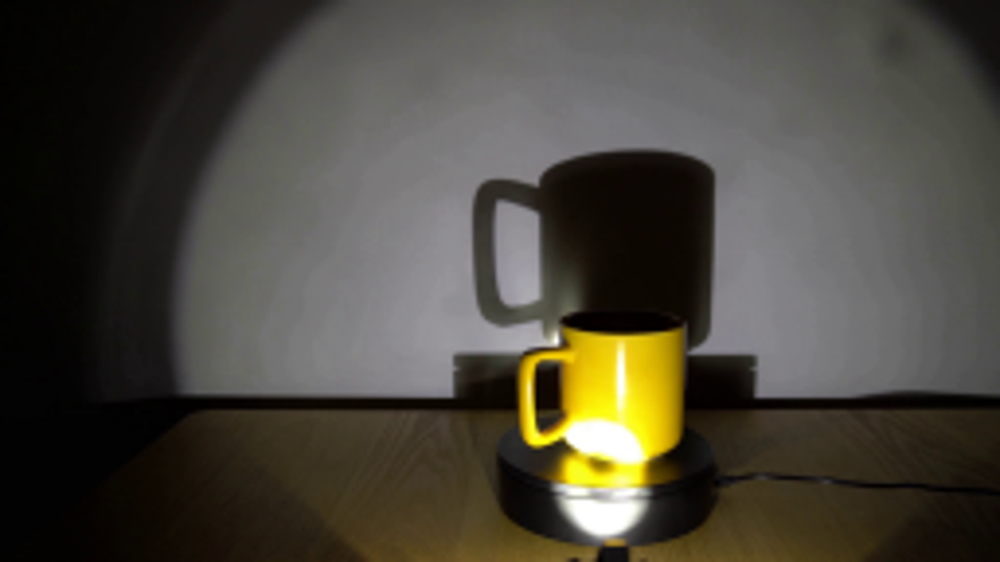
视觉工具实际返回图片 2
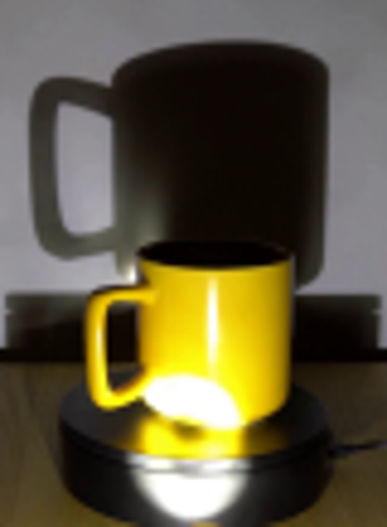
视觉工具实际返回图片 3
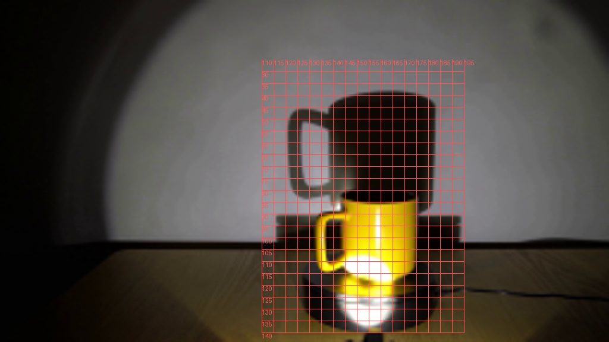
视觉工具实际返回图片 4
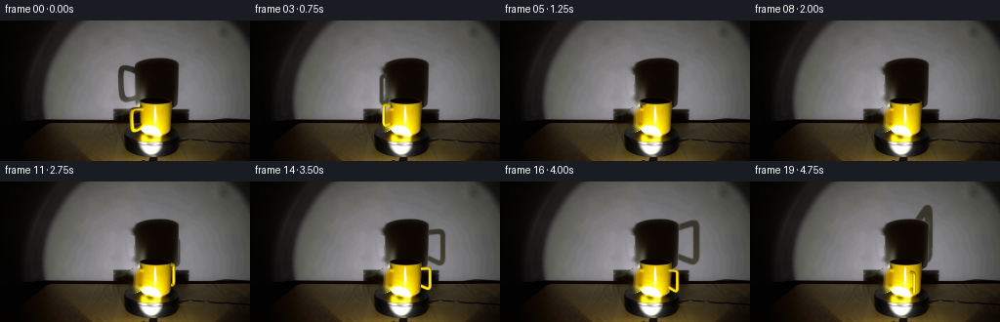
视觉工具实际返回图片 5
视觉工具实际返回图片 6
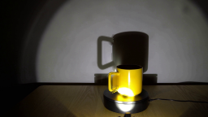
视觉工具实际返回图片 7
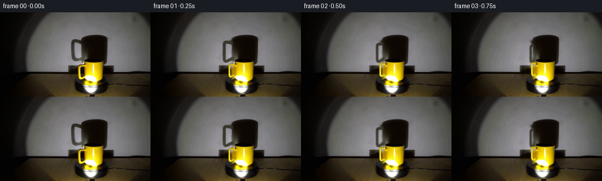
视觉工具实际返回图片 8
视觉工具实际返回图片 9
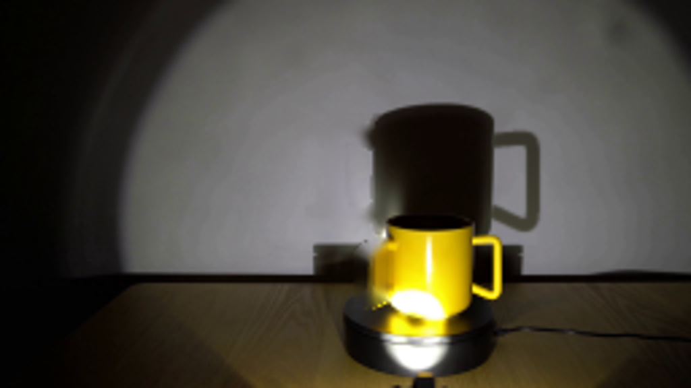
视觉工具实际返回图片 10

视觉工具实际返回图片 11
视觉工具实际返回图片 12
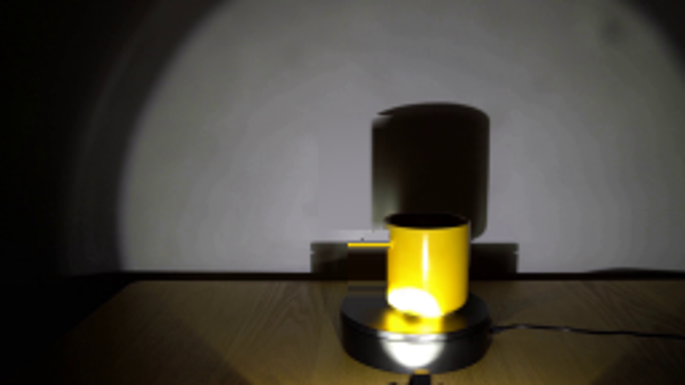
视觉工具实际返回图片 13
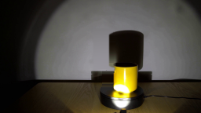
视觉工具实际返回图片 14

视觉工具实际返回图片 15
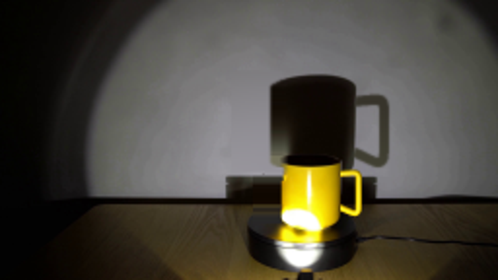
视觉工具实际返回图片 16
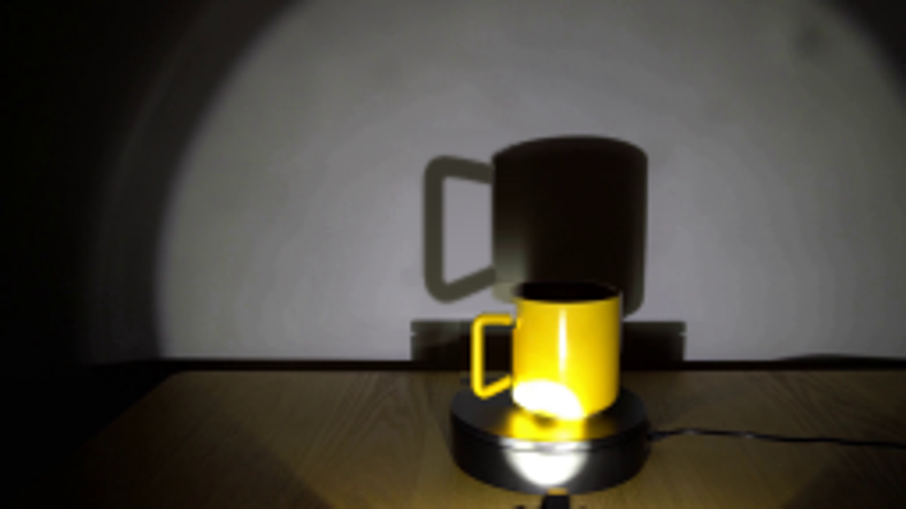
保存候选 4 份；完成命令 14 次；可验证图片返回 16 张。原始 API 响应与完整日志保留在本地。